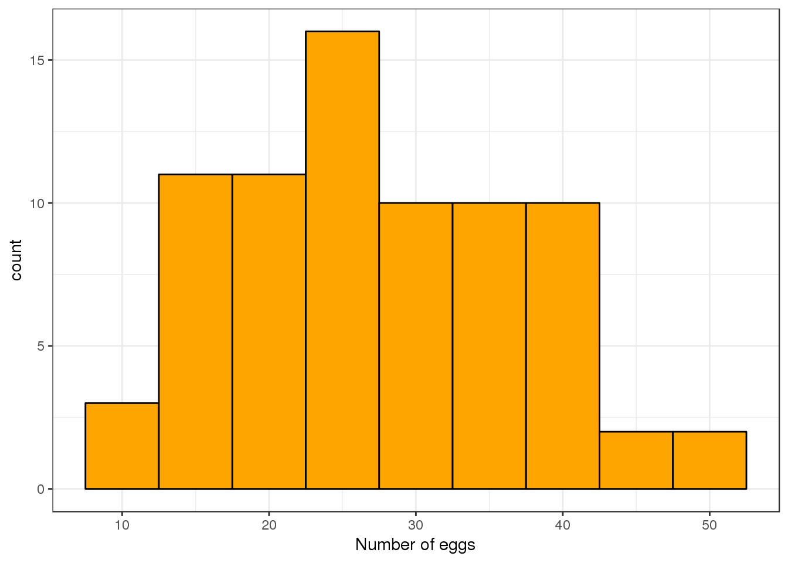
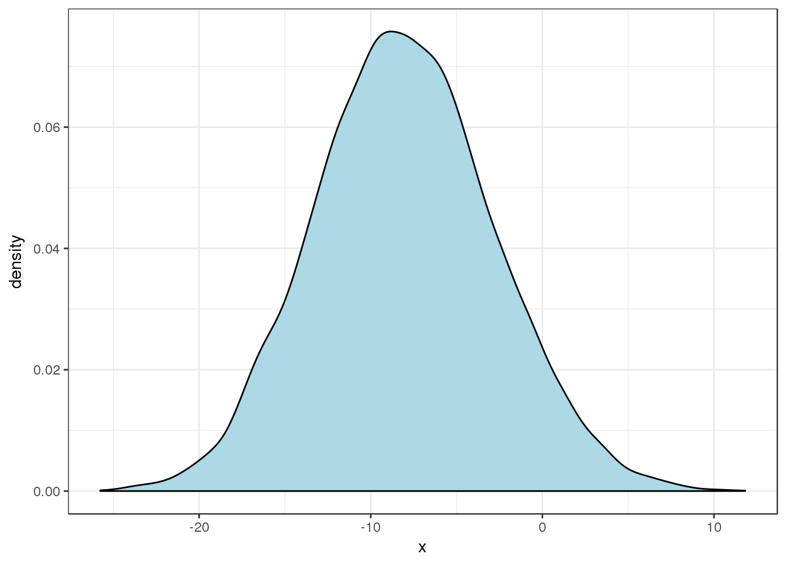

week2
jaehee
1/26/2017
First level header
@
head(DROSOPHILA)
library(ggplot2)
ggplot(data =bugs, aes(x = fecundity )) +
geom_histogram(fill = "orange", color = "black", binwidth = 5) + theme_bw() + labs(x = "Number of eggs")  #Testing hypothsises {-} \(H_0: \mu_{\textrm{nonselected}} -\mu_{\textrm{resistant}} =0\) \(H_A:\mu_{\textrm{nonselected}} -\mu_{\textrm{resistant}} > 0\)
library(dplyr)
bugs<- DROSOPHILA %>%
filter(line !="Susceptible") %>%
group_by(line) %>%
summarize(MF = mean(fecundity), SF= sd(fecundity), n = n())
bugs## # A tibble: 2 × 4
## line MF SF n
## <fctr> <dbl> <dbl> <int>
## 1 Nonselected 33.372 8.942013 25
## 2 Resistant 25.256 7.772391 25xbar1 <- bugs[1, 2]
xbar2 <- bugs[2, 2]
s1 <- bugs[1, 3]
s2 <- bugs[2, 3]
n1 <- bugs[1, 4]
n2 <- bugs[2, 4]
TS <- (xbar1 - xbar2)/(s1^2/n1 + s2^2/n2)^0.5
names(TS) <- "TestStatistic"
TS## TestStatistic
## 1 3.425117str(TS$TestStatistic)## num 3.43nu <- (s1^2/n1 + s2^2/n2)^2 / ((s1^2/n1)^2/(n1-1) + (s2^2/n2)^2/(n2-1))
names(nu) <- "DegreesOfFreedom"
nu## DegreesOfFreedom
## 1 47.08668DF <- DROSOPHILA %>%
filter(line != "Susceptible")
DF## fecundity line
## 1 12.8 Resistant
## 2 21.6 Resistant
## 3 14.8 Resistant
## 4 23.1 Resistant
## 5 34.6 Resistant
## 6 19.7 Resistant
## 7 22.6 Resistant
## 8 29.6 Resistant
## 9 16.4 Resistant
## 10 20.3 Resistant
## 11 29.3 Resistant
## 12 14.9 Resistant
## 13 27.3 Resistant
## 14 22.4 Resistant
## 15 27.5 Resistant
## 16 20.3 Resistant
## 17 38.7 Resistant
## 18 26.4 Resistant
## 19 23.7 Resistant
## 20 26.1 Resistant
## 21 29.5 Resistant
## 22 38.6 Resistant
## 23 44.4 Resistant
## 24 23.2 Resistant
## 25 23.6 Resistant
## 26 35.4 Nonselected
## 27 27.4 Nonselected
## 28 19.3 Nonselected
## 29 41.8 Nonselected
## 30 20.3 Nonselected
## 31 37.6 Nonselected
## 32 36.9 Nonselected
## 33 37.3 Nonselected
## 34 28.2 Nonselected
## 35 23.4 Nonselected
## 36 33.7 Nonselected
## 37 29.2 Nonselected
## 38 41.7 Nonselected
## 39 22.6 Nonselected
## 40 40.4 Nonselected
## 41 34.4 Nonselected
## 42 30.4 Nonselected
## 43 14.9 Nonselected
## 44 51.8 Nonselected
## 45 33.8 Nonselected
## 46 37.9 Nonselected
## 47 29.5 Nonselected
## 48 42.4 Nonselected
## 49 36.6 Nonselected
## 50 47.4 Nonselectedts <- TS$TestStatistic
ts## [1] 3.425117nu <- nu$DegreesOfFreedom
nu## [1] 47.08668pvalue <- pt(ts, nu, lower = FALSE)
pvalue## [1] 0.000641679The \(P(t_{\nu} = t_{47.0866772} \ge 3.425117) = 6.4167898\times 10^{-4}.\)
t.test(fecundity ~ line, data = DF, alternative = "less")##
## Welch Two Sample t-test
##
## data: fecundity by line
## t = 3.4251, df = 47.087, p-value = 0.9994
## alternative hypothesis: true difference in means is less than 0
## 95 percent confidence interval:
## -Inf 12.09179
## sample estimates:
## mean in group Nonselected mean in group Resistant
## 33.372 25.256Permutation/Randomization Testing
N <- 10^4 - 1
PTS <- numeric(N)
for(i in 1:N){
PTS[i] <- t.test(fecundity ~ sample(line), data = DF)$stat
}
epv <- (sum(PTS >= ts) + 1)/(N + 1)
epv## [1] 8e-04ggplot(data = data.frame(x = PTS), aes(x = x)) +
geom_density(fill = "orange") +
theme_bw()Bootstrapping Percentile CI
- Key difference is that sampling is done with replacement!
fecundityR<- DF$fecundity[DF$line =="Resistant"]
fecundityR## [1] 12.8 21.6 14.8 23.1 34.6 19.7 22.6 29.6 16.4 20.3 29.3 14.9 27.3 22.4
## [15] 27.5 20.3 38.7 26.4 23.7 26.1 29.5 38.6 44.4 23.2 23.6fecundityN <- subset(DF,line == "Nonselected", select = fecundity, drop = TRUE)
fecundityN## [1] 35.4 27.4 19.3 41.8 20.3 37.6 36.9 37.3 28.2 23.4 33.7 29.2 41.7 22.6
## [15] 40.4 34.4 30.4 14.9 51.8 33.8 37.9 29.5 42.4 36.6 47.4B <- 10^4 - 1
BSD <- numeric(B)
for(i in 1:B){
bs1 <- sample(fecundityR, size = 5, replace = TRUE)
bs2 <- sample(fecundityN, size = 5, replace = TRUE)
BSD[i] <- mean(bs1) - mean(bs2)
}
ggplot(data = data.frame(x = BSD), aes(x = x)) +
geom_density(fill = "lightblue") +
theme_bw()
quantile(BSD, probs = c(0.05, 0.90))## 5% 90%
## -16.522 -1.240Alan T. Arnholt
Professor of Statistics
arnholtat@appstate.edu


Mailing Address
Appalachian State University
Department of Mathematical Sciences
Walker Hall 340
121 Bodenheimer Dr
Boone, NC 28608